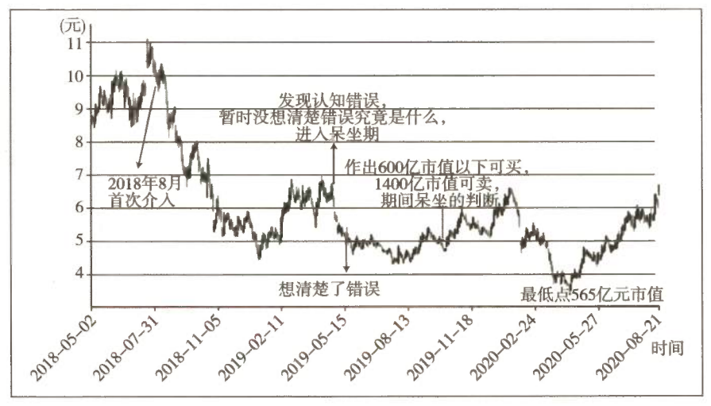
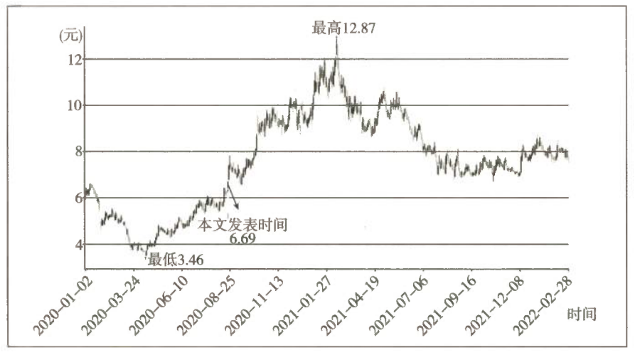

分众传媒投资回顾及周期股估值方法的尝试
伯克希尔是巴菲特认为最失败的一笔投资，最终却变成他成功的投资平台。投资是一生的事业，如何面对错误，是每一位投资者都要学习的功课。本文是老唐对公开实盘后唯一的错判案例的回顾和思考。面对分众传媒的浮亏，全面阐述如何分析、解决、补救，最终实现盈利。本文还提出适用于周期股的估值依据和方法，是弥足珍贵的学习案例。
一、一个错判案例的全过程
本文是对一个错判案例的回顾和思考。下面这张周线图是老唐介入分众传媒至今的股价波动。

图 20-1 分众传媒股价走势（前复权）
1.1 七个关键节点
| 节点 | 时间 | 对应市值 / 价格 | 事件与决策 |
|---|---|---|---|
| ① | 2018 年 8 月 | 目标区间 2100 亿～2500 亿元 | 首次介入分众。当时结论："三年后合理估值 2100 亿~2500 亿元，对折买入，目标配置 10%~15% 仓位" |
| ② | 下跌途中 | 均价约 7.6 元（两次分红后约 7.4 元），折合市值约 1090 亿元 | 伴随股价下跌不断买入，最终建成约 13% 仓位 |
| ③ | 2019-04-25 | 约 960 亿元 | 一季报发布后发现自己思维有误区，但尚未想清错在何处，发布《不再买入，暂时也不会卖出》 |
| ④ | 2019-05-16 | 约 830 亿元 | 想清了错误所在，继续呆坐 |
| ⑤ | 2019 年 10 月 | 买点 600 亿元 / 卖点 1400 亿元 | 反复思考后作出并发布新的估值判断：600 亿元以下可买，1400 亿元以上可卖，其间呆坐不动 |
| ⑥ | 2020 年 4 月 | 最低 565 亿元 | 因手头没有现金、信心也不足以支撑调仓换股，呆坐至今 |
| ⑦ | 2020 年中报后 | 回到 1000 亿元以上 | 市值重回千亿元区域 |
1.2 为何此刻回顾
之所以要在目前刚刚突破千亿元时回顾这次投资，原因有两点：
- 这次跨度两年的投资，截至目前仍亏损约 5%，是老唐所有持股中最糟糕的一只。如果考虑机会成本，持股至今的收获大致等于腰斩。
- 它也是老唐实盘公开近七年来唯一的亏损股（仓位低于 1% 的观察仓不计）。若是再不聊，等涨上去就成嘚瑟和马后炮了。
通过系统回顾，本文主要想阐述清楚三个问题：
| 序号 | 问题 |
|---|---|
| 第一 | 分众持续两年亏损的根源是什么？ |
| 第二 | 发现认知有误后的处理方式是否合理？判断依据是什么？ |
| 第三 | 600 亿元以下买入、1400 亿元以上卖出的估值判断是如何作出的？或者说老唐估值体系里，如何对周期股做估值？ |
二、分众持续两年亏损的根源
分众持续两年亏损的原因十分清晰明白，老唐已经在 2019 年 5 月 18 日发布于"唐书房"的《散打投资⑥》里写过了：
2.1 错误一：对广告客户行为特点的误判
| 维度 | 原先的错误认知 | 实际情况 |
|---|---|---|
| 宏观不景气时企业行为 | 企业应会更注重国内市场，增加广告预算抢夺消费者 | 以品牌展示为主要广告形式的分众，是客户支出首选的削减对象 |
| 分众的处境 | 甚至可能因此受益，至少能保证不受太大冲击 | 遭遇经济形势下滑时受到实质冲击 |
2.2 错误的连锁后果：把周期股当成了稳定增长型企业
正因为这个错误，老唐将本来随着宏观周期波动的周期股，误当作稳定增长型企业做了估值。
按照"宏观好，分众会更好；宏观不好，分众也可以稳住甚至可能增长"的思路，直接以当年净利润为起点考虑，忽略了净利润向下波动的可能。
| 项目 | 错误估值下的预期 | 以 2020 年眼光重估 |
|---|---|---|
| 2021—2022 年净利润 | 百亿元左右 | 恢复到 50 亿元左右就已是相当可观的成果 |
这个错误直接导致了过高的估值。
2.3 错误二：对客户结构的疏忽
属于非原则性问题，此处略过。
三、发现认知错误后，为何选择呆坐而不是认错卖出？
这个问题其实没有标准答案，要取决于发现错误时的公司市值。
3.1 代价已经支付，就无须再纳入考虑
| 时间 | 认知状态 | 市值 |
|---|---|---|
| 2019 年 4 月底 | 意识到思维有误区，但没想明白问题在哪里 | 约 960 亿元 |
| 2019 年 5 月中旬 | 想明白了错误所在 | 约 830 亿元 |
从 1090 亿元到 830 亿元的 260 亿元跌幅，是老唐为自己的错误判断所支付的代价。
代价已经支付了，就无须将其纳入考虑范围，只需要将 830 亿元市值的股票和等值现金摆上天平的两端，比较哪个更划算即可。依照新的认识，830 亿元属于基本合理的估值范围——用合理估值的股权去交换等价的货币，没有道理。
其实，"等价交换"是个错误的经济学概念。真实世界里所有的自愿交易，都是在交易双方均认为自己获益的情况下实现的。
3.2 决策的唯一标准
如果 2019 年 5 月中旬想通错误所在时，市值在千亿元以上，或许老唐就卖掉了。
| 不构成买卖依据 | 真正的决策依据 |
|---|---|
| 股票是浮盈还是浮亏 | 确定错误时，股票市值与等值现金之间的比较 |
| 在它上面耗费过多少时间和精力 | 同上 |
四、如何给周期股估值？
当认识到分众的经营情况会随宏观周期波动，后面的事情就简单了。
4.1 理论源头：格雷厄姆的"正常产出"
格雷厄姆在《证券分析》里写过：对于周期性波动的企业盈利，可以采用 10 年的平均利润去模拟近似的"正常"收益。他在《证券分析》第六版里写道：
在大多数情况下，应该利用 5～10 年的年平均收益来计算普通股的投资价值。
早在 1934 年第一版的《证券分析》里，格雷厄姆已经谈及这个"正常产出"下的市盈率概念，只是老唐手头没有第一版书籍。
4.2 理论发展：席勒市盈率（CAPE）
| 项目 | 内容 |
|---|---|
| 提出者 | 罗伯特 · 席勒（耶鲁大学教授，2013 年诺贝尔经济学奖得主） |
| 出处 | 1998 年论文《估值比率和股票市场长期前景》 |
| 指标名称 | 周期调整市盈率（CAPE），又称席勒市盈率（Shiller's PE） |
| 计算方式 | 沿用格雷厄姆建议的周期调整，采用十年平均盈利与股价做对比 |
| 核心结论 | ① 当时美国股市已整体高估，处于"非理性繁荣" ② 股票市场长期收益率普遍与 CAPE 存在较为显著的负相关关系 |
2000 年 3 月，席勒教授将研究成果汇集出版，即著名的《非理性繁荣》。该书出版之后的一个月，美国互联网泡沫破裂，纳斯达克崩盘。自此，席勒市盈率迅速成为全球股市指数周期分析和周期股分析的可靠利器之一。
4.3 实战演算：分众传媒的周期股估值
站在巨人的肩膀上，事情就变得很简单。
分众传媒是 2015 年借壳上市的公司，各类股票软件里显示的 2014 年及以前的净利润不对。需查分众传媒公司在美国上市期间披露的净利润及相关新闻报道，然后根据当时的汇率折算为人民币。
| 步骤 | 计算过程 | 结果 |
|---|---|---|
| ① 统计十年净利润 | 2010—2018 年实际数据 + 2019 年预估 20 亿元（实际年报为 18.8 亿元） | 10 年累计约 303 亿元 |
| ② 求"正常产出" | 303 ÷ 10 | 年均约 30 亿元 |
| ③ 取合理市盈率 | 按老唐估值法，无风险收益率处于 3%～4% 时取 25～30 倍 | 25～30 倍 |
| ④ 得合理估值 | 30 × 25 ～ 30 × 30 | 750 亿～900 亿元，即 825 ± 10% |
| ⑤ 算买点 | 825 × 70% | ≈ 578 亿元 |
| ⑥ 算卖点 | 825 × 110% × 150% | ≈ 1360 亿元 |
说明：因判断不了三年，且本就使用的是十年平均数估出的合理估值，故直接借用当年合理估值数据——按当年合理估值的七折买入，合理估值上限的 150% 卖出。
这就是 2019 年 10 月 30 日发表如下结论的思考过程：
4.4 "三年后五折"与"当年七折"为何是一码事
必然有朋友会询问：老唐估值法不是三年后合理市值的 50% 买入吗？怎么又经常使用当年合理市值的 70% 呢？
这两者在数学上其实是一码事，只是背后隐含了一个正常年化增长 12% 的假设罢了：
| 假设 | 数值 |
|---|---|
| 当前净利润 | 100 |
| 年化 12% 增长三年后净利润 | 140 |
| 等式 | 100 × 70% = 140 × 50% = 70 |
也就是说，当年合理估值的七折，就是假设 12% 增长下、三年后合理估值五折的简化计算。12% 的取值，是老唐心目中优质企业应有的可持续增长水平。
4.5 12% 这个数字从哪儿来
（1）巴菲特的历史统计
1977 年 5 月，巴菲特公开发表在《财富》杂志上的《通货膨胀如何欺诈投资者》一文里，曾经这样写道：
| 统计口径 | 时间段 | 年均净资产收益率 |
|---|---|---|
| 道琼斯 30 种工业股票 | 二战结束后第一个 10 年（至 1955 年前） | 12.8% |
| 道琼斯 30 种工业股票 | 第二个 10 年 | 10.1% |
| 道琼斯 30 种工业股票 | 第三个 10 年 | 10.9% |
| 《财富》500 强 | 1965 年前的 10 年 | 11.2% |
| 《财富》500 强 | 此后 10 年 | 11.8% |
| 《财富》500 强（特殊高点） | 1974 年 | 14.1% |
| 《财富》500 强（特殊低点） | 1958 年、1970 年 | 9.5% |
（2）芒格的"刺猬"原则
查理 · 芒格曾这样表述伯克希尔的投资原则：
他这里用的 13%，所代表的含义就是"比（能够获得 12% 回报率的）普通优质企业还要好一点点的企业"。
（3）A 股的历史验证
这个 12% 究竟是统计结果（巧合），还是背后有深层逻辑支撑，老唐暂时还没彻底想明白。但它在我国股市同样得到了历史数据验证：
| 项目 | 数据 |
|---|---|
| 沪深 300 指数基点 | 2004-12-31 = 1000 点 |
| 至今时长 | 15.65 年 |
| 沪深 300 全收益指数收盘点位（含分红） | 6139.26 |
| 折合年化收益率 | 12.29% |
说破了，简单到令人不敢相信，对吧？投资本来就不复杂，复杂的是判断。 如此简陋的估值法，会不会遭到你的嘲笑呢？
4.6 一个诚实的补白：为什么 565 亿元时没有买入
需要补充的是，2020 年 4 月分众传媒最低跌至 565 亿元市值，并在 600 亿元市值以下待了三天，然而老唐并没有买入。
| 原因层级 | 内容 |
|---|---|
| 表面原因 | 当时没有闲余资金 |
| 深层原因 | 三四月份面对网络上大量的质疑、抱怨甚至谩骂，自己信心动摇了；或者说在曾经信心满满的股票上犯了严重错误，所导致的自我怀疑（好在是轻度）才是主因 |
否则，从家用里抠搜抠搜，或者从所投资的指数基金里做做腾挪，增加几十万元乃至一百多万元的分众还是可以做到的。
从这个角度看，这四个多月近 70% 的涨幅没有拿到，老唐也不遗憾。它再次证明一句话：
五、补充说明

图 20-2 分众传媒股价走势（前复权）
| 时间 | 操作 | 均价 | 仓位变动 |
|---|---|---|---|
| 2021 年 1—2 月 | 因股价触及预设卖点，卖出 | 11.26 元 | -3% |
| 2021 年 1—2 月 | 卖出 | 12.39 元 | -4% |
| 2021 年 7 月 | 买入 | 7.25 元 | +3% |
| 其间 | 零碎小额资金买回 | 平均 7.6 元 | +1% 出头 |
剩余 4% 仓位原计划在 1980 亿元市值卖出，但实际最高到达 1936 亿元市值后即转头下跌。
截至 2022 年 2 月底，老唐实盘继续持有分众 9% 的仓位（与上表加减差额为所有持股股价涨跌不同步造成的），为实盘第四大持股。